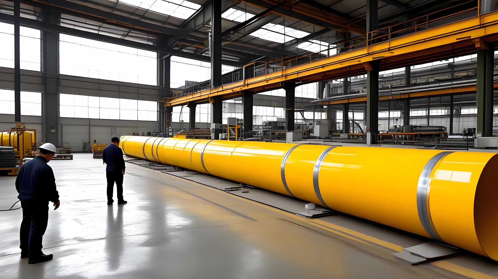
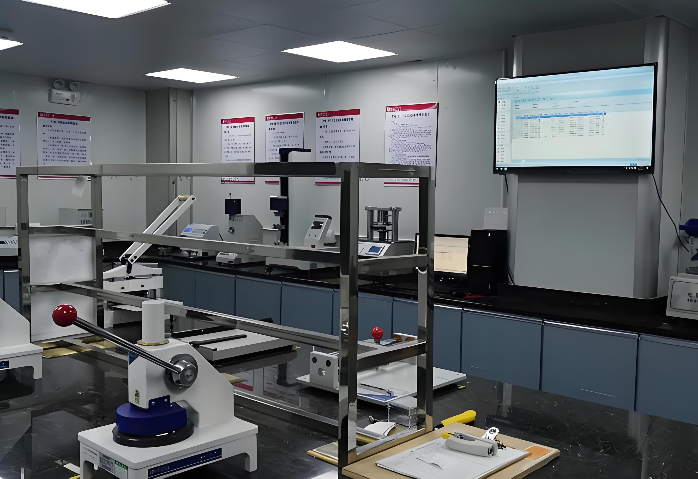
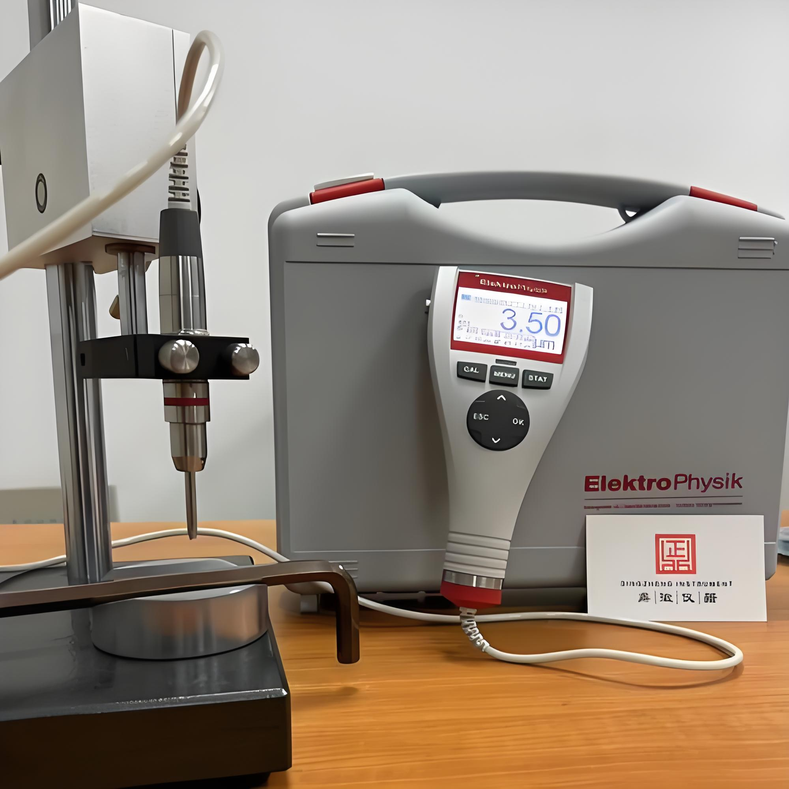
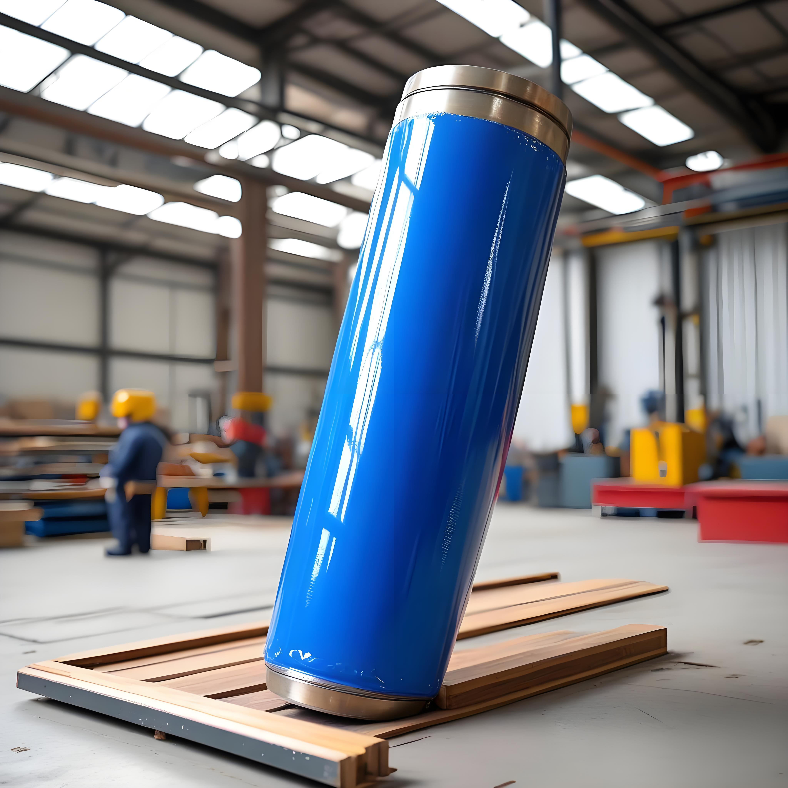
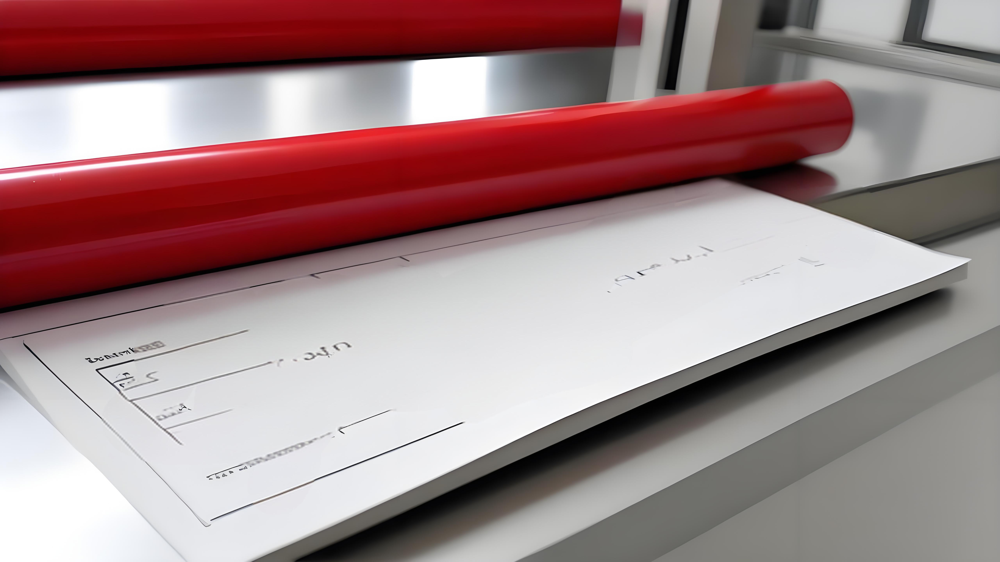
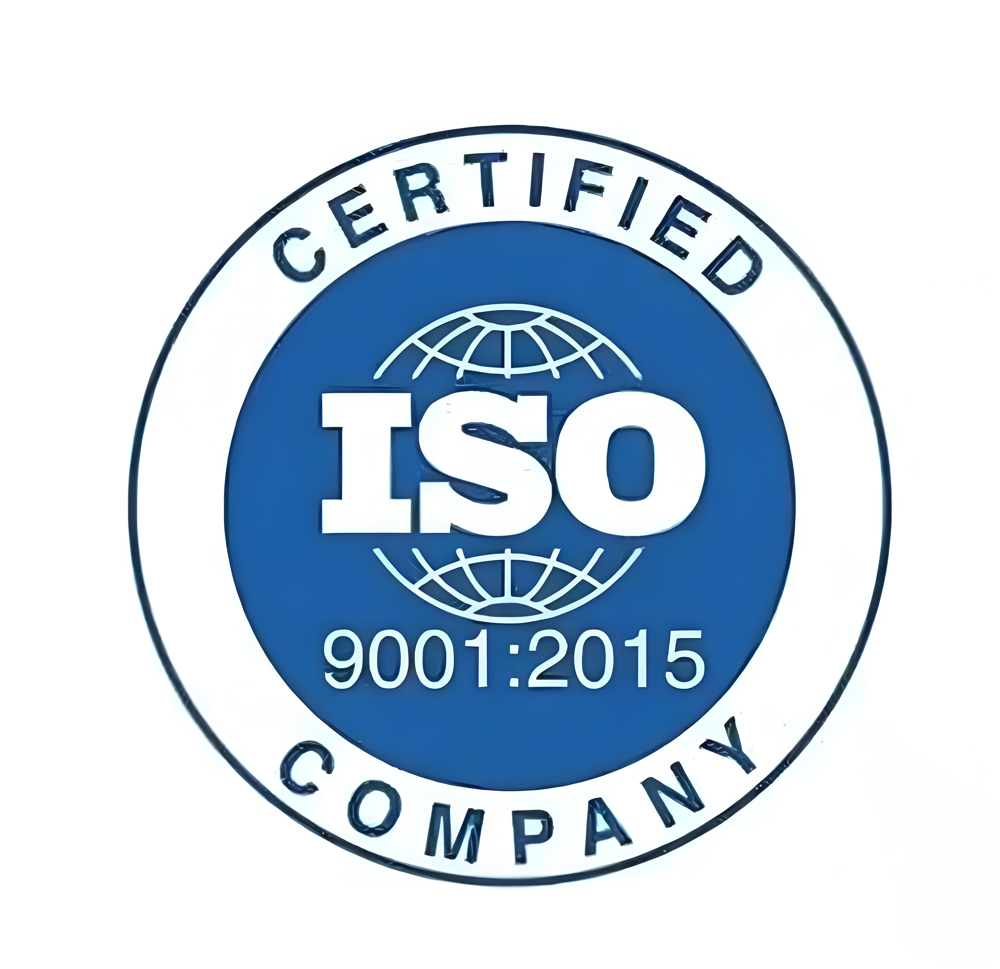
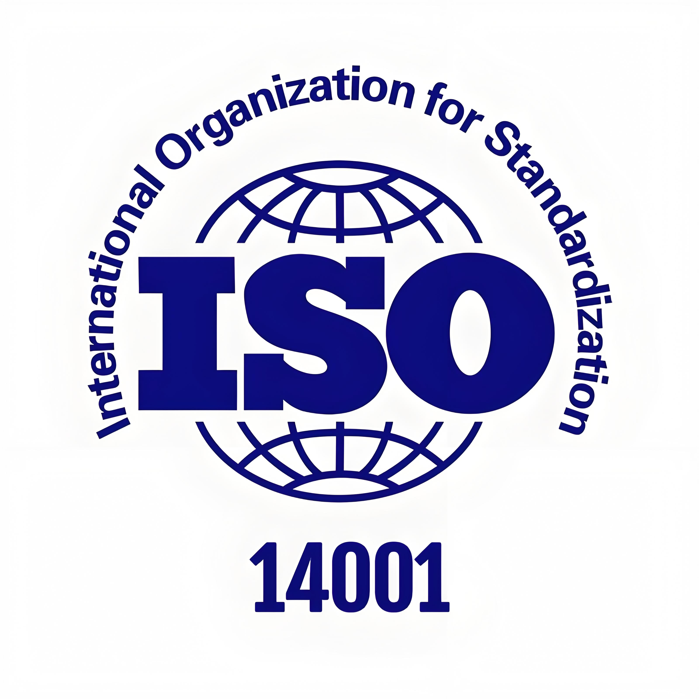
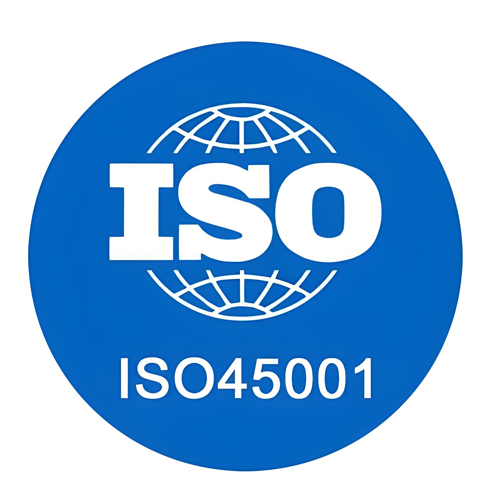
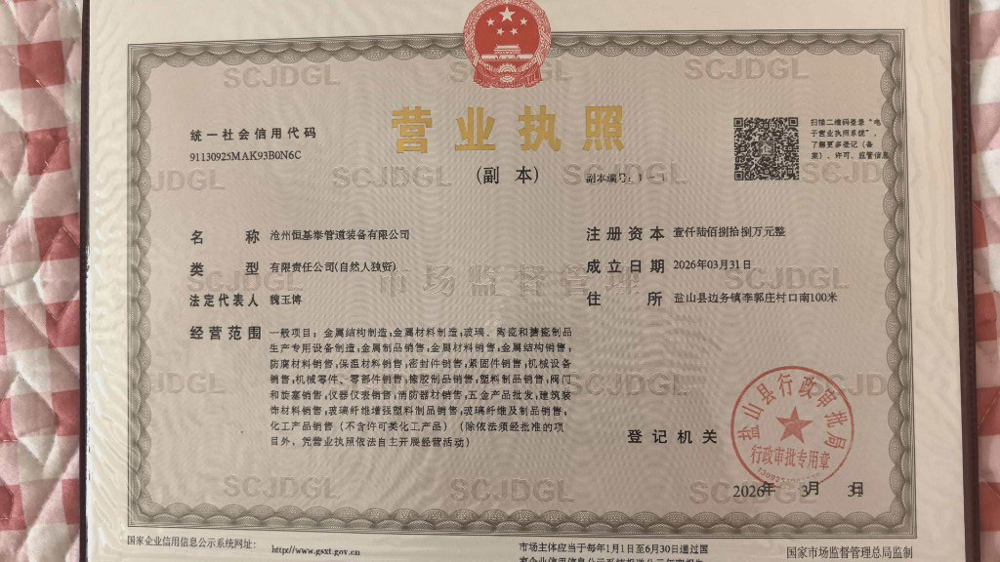

品質マネジメントシステム
すべての製品が規格を満たすことを確保する包括的な品質管理プロセス
恒基泰管道設備有限公司は、ISO 9001:2015品質マネジメントシステムを厳格に実施し、原材料の調達から製造、品質検査、倉庫保管に至るまでの包括的な品質管理システムを確立しています。当社の品質管理部門は独立して運営され、専門技術者と先進的な検査設備を備え、すべてのバッチの製品が国家規格と業界基準を満たすことを確保しています。
当社の品質管理システムは主に以下の側面を含みます：
-
原材料品質管理
すべての入荷材料の厳格な検査を実施し、設計要件を満たすことを確保し、認定サプライヤー管理システムを確立
-
生産工程管理
生産全工程の重要プロセスにチェックポイントを設置し、製造パラメータをリアルタイムでモニタリングして製品品質の一貫性を確保
-
完成品検査
各バッチの製品に対する包括的な検査を実施し、外観、寸法、コーティング厚さ、接着力、機械的特性などを確認
-
品質トレーサビリティシステム
製品バッチ管理と品質トレーサビリティの仕組みを確立し、各バッチを原材料ロットと生産工程まで遡及可能

品質方針
「品質第一、顧客第一、継続的革新、卓越性の追求」の品質方針を掲げ、お客様に高品質で信頼性の高いパイプライン製品と専門的な技術サービスを提供します。
試験設備と能力
先進的な試験設備、包括的な試験能力
物理特性試験
- • 引張強度試験
- • 平坦化試験、曲げ試験
- • 硬度試験
- • 衝撃靭性試験
- • 寸法・肉厚精度試験
コーティング性能試験
- • コーティング厚さ試験
- • 密着性試験
- • コーティング連続性試験
- • 耐衝撃性試験
- • 耐食性試験
特殊性能試験
- • 耐水圧試験
- • 高低温サイクル試験
- • 耐摩耗性試験
- • 経年変化試験
- • 衛生性能試験




規格と認証
主要規格への準拠、複数の認証取得
適用規格
国家規格 (GB)
GB/T 5135.20-2010: 「自動スプリンクラー消火システム 第20部: コーティング鋼管」
GB/T 37594-2019: 「鋼管の紫外線防止三層溶融粉体外部コーティング技術仕様」
GB/T 42541-2023: 「ガス配管用コーティング鋼管」
GB/T 23257-2017: 「埋設鋼管用ポリエチレン防食層」
GB/T 39636-2020: 「鋼管の溶融エポキシ粉体外部コーティング技術仕様」
GB/T 28897-2021: 「流体輸送用鋼プラスチック複合管および継手」
GB/T 8163-2018: 「流体輸送用シームレス鋼管」
GB/T 3091-2015: 「低圧流体輸送用溶接鋼管」
GB/T 9711-2023: 「石油・天然ガス産業のパイプライン輸送システム用鋼管」
業界規格
CJ/T 120-2016: 「給水用塗装複合鋼管」（建設業界）
SY/T 0315-2013: 「鋼管の溶融エポキシ粉体外部コーティング技術仕様」（石油・ガス業界）
MT/T 181-1988: 「炭鉱用プラスチック管の安全性能試験規格」（石炭業界）
CDP-S-PC-AC-008-2009/A: 「エポキシ粉末（三層PE用）」（業界規格）
SY/T 0442-2018: 「鋼管の溶融エポキシ粉体内部防食層技術規格」（石油・ガス業界）
SY/T 6717-2016: 「油井管とケーシング内部コーティングの技術条件」（石油・ガス業界）
国際規格
ISO 21809-2 (ISO): 「石油・天然ガス産業-埋設または水中パイプライン用外部コーティング」
DIN 30670 (DE): 「鋼管および継手のポリエチレンコーティング」
CSA Z245.20-22 (CA): 「鋼管用溶融エポキシ樹脂外部コーティング」
NF A 49-710 (FR): 「三層ポリエチレン外部コーティング」
AWWA C213a (US): 「水道用鋼管および継手の内外部溶融エポキシコーティング」
GS EP COR 222 (UK): 「パイプライン用溶融エポキシコーティング」
品質認証

ISO 9001:2015
品質マネジメントシステム

ISO 14001:2015
環境マネジメントシステム

ISO 45001
労働安全衛生
炭鉱用製品
安全マーク認証

営業許可証
市場主体登録